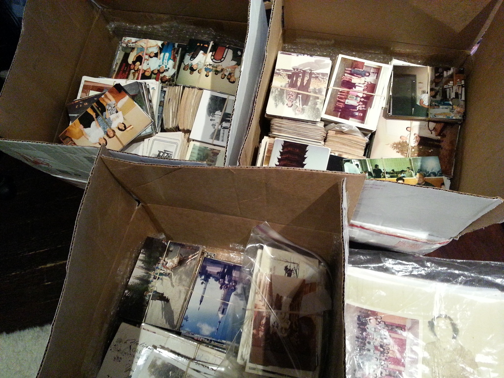
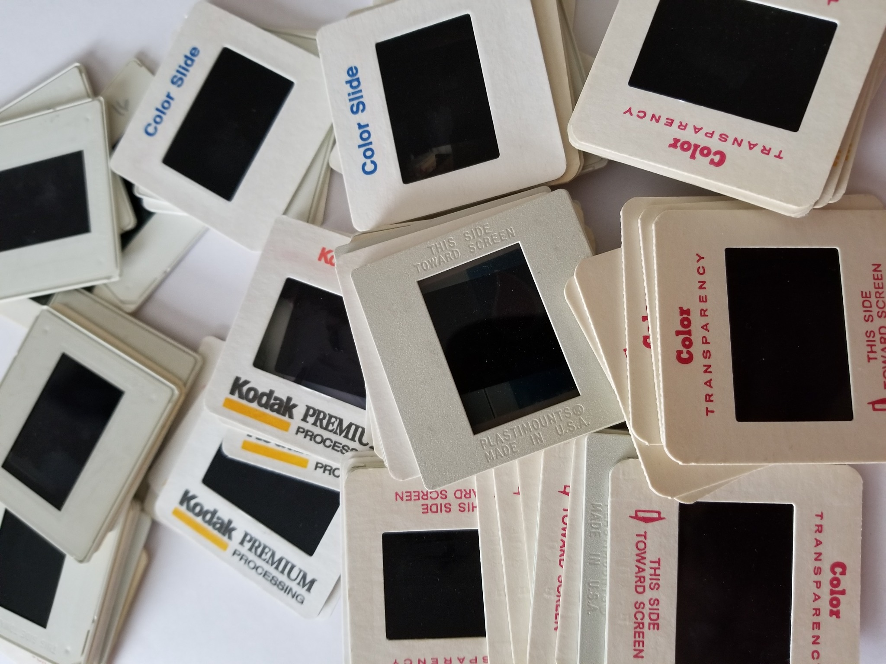
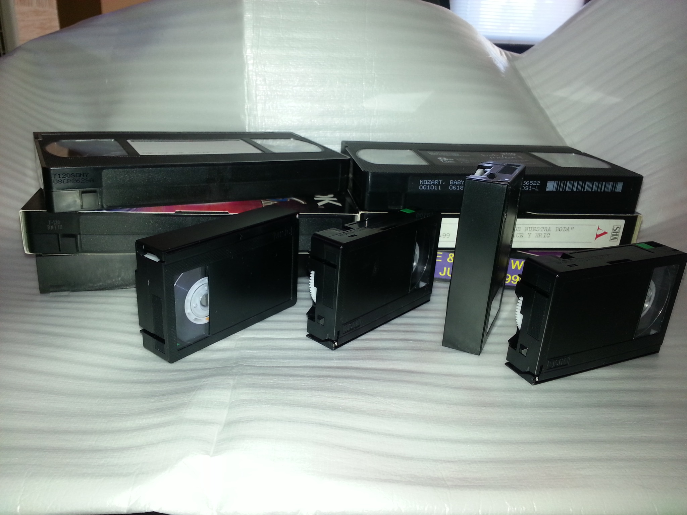
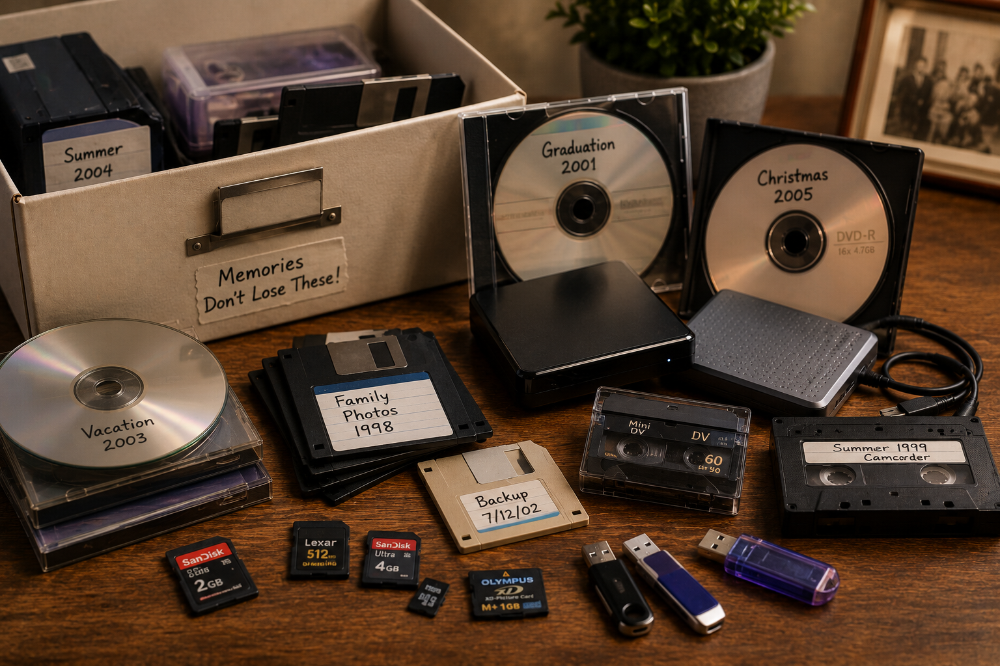
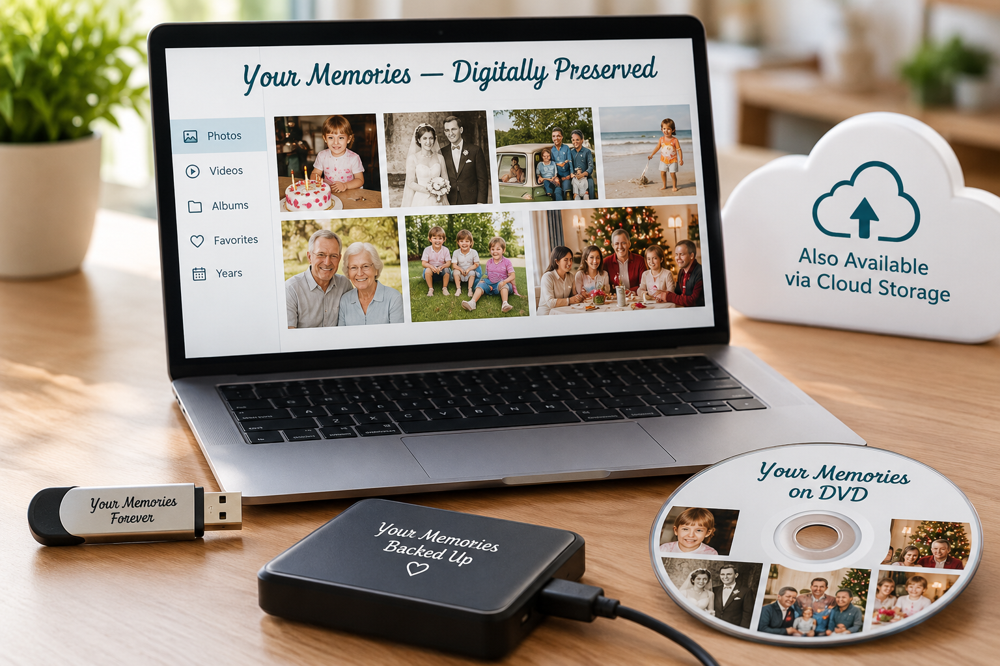
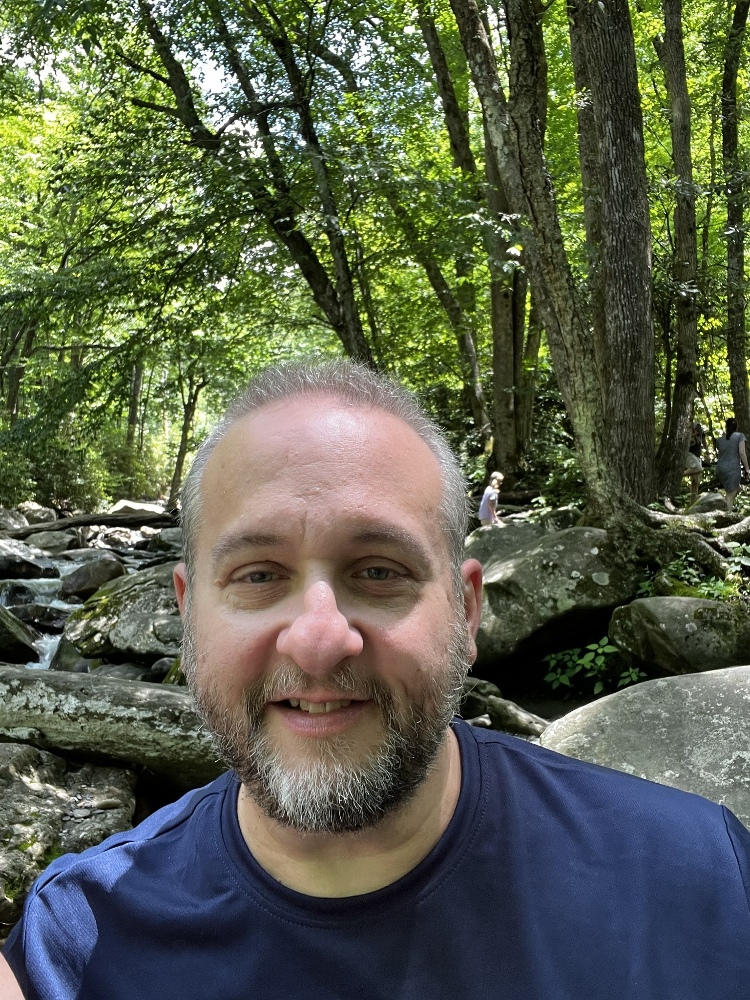

Photos & Albums
Loose prints, photo albums, scrapbooks, and more—carefully scanned at high resolution to preserve every detail and color.
Local memory preservation since 2012
We help families preserve photos, slides, negatives, videotapes, and other treasured memories before they're lost to time.
Preserving Family Memories for Future Generations
Recognize your collection?
Many treasured memories are stored in boxes, albums, videotapes, and older digital media that have not been viewed in years. We help families preserve and rediscover them before they are lost to time.

Loose prints, photo albums, scrapbooks, and more—carefully scanned at high resolution to preserve every detail and color.

We digitize 35mm slides, negatives, and other photographic film formats, helping families rediscover treasured images that may not have been seen in years—and sometimes have never been seen at all.

VHS, VHS-C, Hi8, Video8, Digital8, MiniDV, and more—converted to high-quality digital files ready to watch and share.

Forgotten photos and videos are often hidden away on old CDs, DVDs, floppy disks, flash drives, and hard drives. We help families recover those memories and make them accessible again.

Your completed memories can be delivered on flash drives, external hard drives, cloud storage, or DVDs—whichever option works best for you.
Personal. Local. Trusted.
For more than a decade, families have trusted us with irreplaceable photos, tapes, slides, and digital memories.
Simple and personal
From first conversation to final delivery, we'll guide you through every step.
Call, text, email, or use the form below. Tell us what you have and what you'd like to preserve.
We'll arrange a convenient time to review your collection and discuss the best plan for your project.
Your memories are carefully scanned, converted, and preserved locally—never shipped away or outsourced.
Receive your files in a convenient digital format, ready to watch, view, share, and preserve.
Why now matters
Family photographs, wedding albums, children's milestones, vacations, military memories, holiday gatherings, home movies, and genealogy collections are more than media. They are irreplaceable pieces of your family's history.
Photos fade. Slides discolor. Videotapes deteriorate. Hard drives fail. Older technology becomes increasingly difficult to access.
Preserving your memories today helps ensure they can be enjoyed, shared, and passed down for generations.
Why we do this
It started with a simple question:
“What happens to all those old photos and tapes sitting in closets?”
That question became Remember Those Moments—originally founded by Eric Eccarius in 2012 as Organize Those Photos in the Rosedale Park neighborhood of Chicago. What began as a passion for helping families rescue fading memories has grown into a full-service media preservation business proudly serving DeKalb, Sycamore, Creston, Rochelle, Rockford, and surrounding communities.
The faded photos scattered in boxes, aging photo albums tucked away in a closet, old VHS tapes of birthday parties and family gatherings, forgotten slides that haven't been seen in years—these aren't just objects. They're irreplaceable pieces of your family's history.
And we treat them that way.
We handle every tape, photo, slide, and treasured memory with the same care we'd give our own. Unlike big-box services, your memories never leave our community. All work is done locally—no shipping, no outsourcing, and no unknown hands.
Many families feel overwhelmed by boxes of photos, aging tapes, and forgotten media. Others simply don't have the time or know where to begin. We're here to guide you through the process and help you preserve what matters most.

A real person you can trust
Hi, I'm Eric Eccarius, founder of Remember Those Moments.
Since 2012, I've helped families preserve photos, slides, videotapes, and digital memories that might otherwise be lost to time.
What I enjoy most is helping people rediscover memories they haven't seen in years—and sometimes memories they didn't even know existed.
When you contact Remember Those Moments, you'll work directly with me—not a call center, mail-away service, or large processing facility.
Call or text Eric: (773) 916-7068Real stories
A glimpse at the moments families have been able to rediscover and share.
Boxes of inherited slides held family vacations, holidays, and relatives that had not been seen in decades—and some images younger family members had never seen at all.
Family gatherings, birthdays, and special events stored on aging videotapes became watchable again and easy to share with relatives.
Photos trapped on an older hard drive were recovered and preserved, making memories the family thought were gone accessible once again.
In their own words
★★★★★“I never knew these pictures existed until you digitized my parents' slides.”
— Jeff
★★★★★“It was wonderful to reminisce and share these old photos, especially since many of those pictured are no longer with us.”
— Bill
★★★★★“I haven't seen these videos in years. It was wonderful to watch them again.”
— Julie
★★★★★“Watching those videos again brought back so many memories.”
— Christina
★★★★★“I thought those photos were gone forever.”
— Ryan
Close to home
DeKalb • Sycamore • Creston • Rochelle • Rockford and surrounding areas
Don't see your community listed? Contact us to discuss your project.
Helpful information
Answers to common questions about preserving, handling, and receiving your family memories.
We preserve printed photos, photo albums, slides, negatives, VHS tapes, camcorder tapes, DVDs, CDs, flash drives, hard drives, memory cards, and many other legacy media formats.
Yes. All original materials are returned to you after digitization. Your memories remain yours throughout the entire process.
Completed projects can be delivered on flash drives, external hard drives, DVDs, or through cloud storage, depending on your preferences and project needs.
In many cases, yes. We can often recover memories from aging, obsolete, or difficult-to-access media formats. We will evaluate your collection and discuss the available options.
Every collection is different. Project timelines depend on the amount and type of media involved. We will provide an estimated completion timeframe during your consultation.
No. We work locally and do not send your memories to a large processing facility. Your collection remains handled with personal care and attention.
We serve Northern Illinois and surrounding communities, including DeKalb, Sycamore, Rochelle, Rockford, Creston, and nearby areas. If you are outside these locations, contact us and we will discuss available options.
Complete the contact form, call, text, or email us. We will discuss your collection, answer your questions, and recommend the best preservation options for your memories.
Let's talk about your collection
Whether you have a handful of photos, boxes of slides, family videotapes, or older digital media, we're here to help.
Call or Text Eric
(773) 916-7068
Email
rememberthosemoments@yahoo.com
Service Area
Northern Illinois and surrounding communities